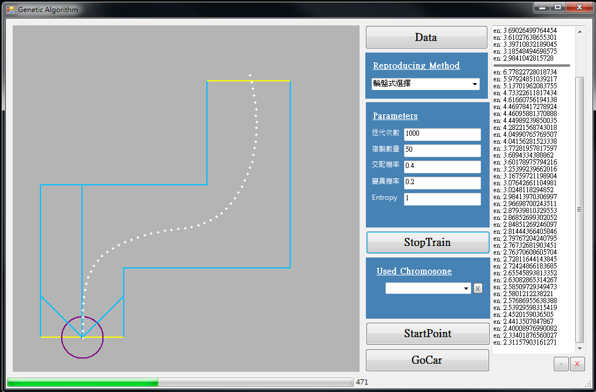
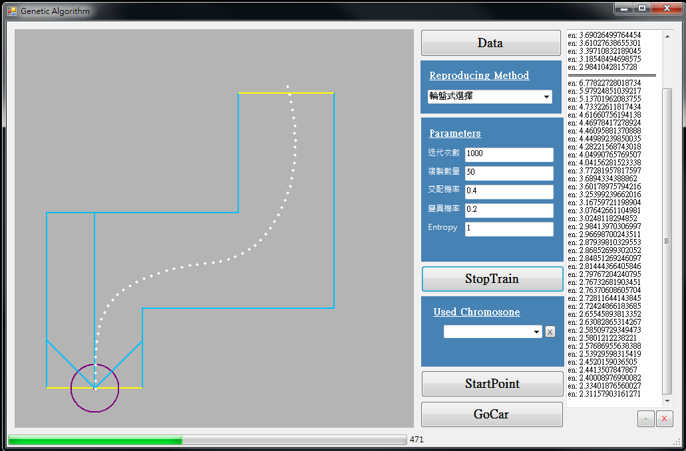

LINGLING 多功能鬧鈴
- 比賽名稱 :
2012中華電信創新應用大賽行動應用組 第三名
- 實作技術 :
Android、Google API、Facebook API
- 專案概述 :
此專案結合Google API及Facebook API之功能，實作多種鬧鐘功能 : 一般鬧鈴配合遊戲解鎖、GPS鬧鈴、群組鬧鈴、假來電鬧鈴、情人鬧鈴
- 專案分工 :
3人一組 : 2人設計程式、1人設計美工，此專案我負責一般鬧鈴之遊戲、假來電鬧鈴、情人鬧鈴
2012中華電信創新應用大賽行動應用組 第三名
Android、Google API、Facebook API
此專案結合Google API及Facebook API之功能，實作多種鬧鐘功能 : 一般鬧鈴配合遊戲解鎖、GPS鬧鈴、群組鬧鈴、假來電鬧鈴、情人鬧鈴
3人一組 : 2人設計程式、1人設計美工，此專案我負責一般鬧鈴之遊戲、假來電鬧鈴、情人鬧鈴
2015全國微電腦應用系統設計製作競賽 第三名
Android、Arduino、JNI、Python
此專案為手機結合Arduino利用藍芽連線溝通之應用。我們希望做出一組能自己辨識鼓手姿態的鼓棒，並經過藍芽與手機溝通，實作許多應用。
4人一組 : 分為四部分 1.手機端 2.MCU端 3.演算法調教 4.產品包裝，我負責統籌專案與手機端實作
為VB、C++程式，製作附加功能，監控產品的有效期限
C++ : 製作dll將log資訊埋藏在特定路徑與Windows的log檔中
C # : 製作設定有效日期以及加密介面
機台每天會產生數萬筆資料，提供能夠整理機台產出資料的程式介面
C# : 製作程式介面及功能
提供一通用程式，能即時接收被監控之程式發出之訊息，並能夠整理及控制被監控之程式
C++ : 使用thread，產生即時訊息
C # : 製作程式介面及功能
使用影像處理演算法擷取場景中之車輛，並計算每個瞬間的車輛數，但因為會有偵測的誤差，最後使用一機率模型來估測場景中之車輛數。
C++ : 實作演算法
C # : 擷取資料及標記資料之介面
OpenCV : 使用OpenCV提供之API(ex. GMM、HoughLine、Morphology...)
Matlab : 訓練回歸模型、批量分析整理資料
利用物件導向的概念，實作一個UML編輯器
Java、OOP、 Design Pattern、UML
設計介面，分析輸入資料，實現感知機(Perseptron)、放射狀基底函數網路(Radial basis function network)及自我組織對映(Self-organizing map)等類神經網路演算法。
C#、Perseptron、RBFN、SOM
模擬自走車行駛於特定場景。並利用三種不同的人工智慧演算法(分別為Fuzzy System、Genetic Algorithm、Particle Swarm Optimization)，訓練車輛行駛的判斷模型。
C#、Fuzzy System(模糊系統)、GA(基因演算法)、PSO(粒子群優化)
實作以及教學(使用英文)OPENCV演算法
C++、OPENCV
蒐集新聞網站的資料，分析重要資訊
Python、MongoDB、OpenCL
利用Matlab自己實作2D-LDA演算法，並以班上的同學為Database訓練模型及即時辨識，測試演算法的準確度
MatLab、LDA(Linear Discriminant Analysis)
比賽影片


 
